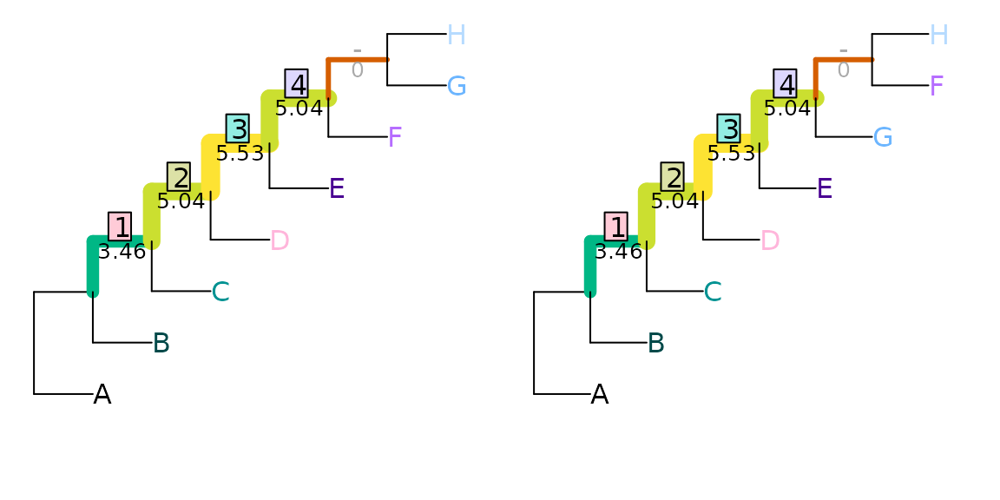

Extending the Robinson-Foulds metric
Martin R. Smith
Source:vignettes/Robinson-Foulds.Rmd
Robinson-Foulds.RmdThe Robinson–Foulds distance
An intuitive way to calculate the similarity between two trees is to calculate the resolution of their strict consensus, which corresponds to the number of splits that occur in both trees (Schuh & Polhemus, 1980). The corresponding distance measure, the Robinson–Foulds distance (Robinson & Foulds, 1981), counts the number of splits that are unique to one of the two trees.
It is important to remember that counting splits is not the same as counting clades, edges or nodes. If a tree is drawn as rooted (even without a root edge), then the number of splits is one less than the number of edges or clades, and two less than the number of nodes. For example, the trees below have one split, two edges and three nodes in common.

The simplicity of counting splits is appealing, but limited by the underlying assumption that all splits are equivalent.
As an example, a split that separates eight leaves into two sets of four (as in the right-hand tree above) has a \(\frac{1}{35}\) chance of being compatible with the reference tree. In contrast, a split that separates two leaves from the other six has a \(\frac{1}{7}\) chance of matching the reference tree: the similarity observed is five times more likely to have arisen by chance. In other words, failure to match an even split is less noteworthy than failure to match an uneven one.
As a consequence, trees whose splits are less even will, on average, exhibit higher Robinson–Foulds distances with comparison trees. Compare a balanced and an unbalanced eight-taxon tree:

Each tree divides the eight taxa into five splits. The phylogenetic information content of a split is a function of the probability that the split will match a uniformly chosen random tree, i.e. the proportion of eight-leaf binary trees that contain the split in question. (Information content, in bits, is defined as \(-\log_2(\textrm{probability})\).) This, in turn, is a function of the evenness of the split:
| Matching trees | P(Match in random tree) | Phylogenetic information content | |
|---|---|---|---|
| Split size: 2:6 | 945 / 10 395 | 0.0909 | 3.46 bits |
| Split size: 3:5 | 315 / 10 395 | 0.0303 | 5.04 bits |
| Split size: 4:4 | 225 / 10 395 | 0.0216 | 5.53 bits |
In the first tree, split 1 is even, dividing four taxa from four
others (4|4); splits 2–5 are maximally uneven
(2|6). If each split is treated as independent, then the
total information content of the five splits is 19.37 bits, whereas that
of the five splits in the second tree, of sizes 2|6,
3|5, 4|4, 3|5 and
2|6, is 22.54 bits. Put another way, a random tree will on
average share more splits with the balanced tree (whose splits are
predominantly uneven and thus likely to be matched) than the asymmetric
tree (which contains more even splits that are less likely to occur in a
random tree).
Indeed, of the 10 395 eight-leaf trees, many more bear at least one split in common with a balanced tree than with an asymmetric tree:

Information-corrected Robinson–Foulds distance
This differing information content can be accommodated by weighting
each split according to the amount of phylogenetic information it
contains (Smith, 2020). The two tree pairs
below both have a Robinson–Foulds distance of two, but the first pair
differ with regard to an uneven split (ABCDEF|GH), so
obtain a total difference of 22.54 − (3.46 + 5.04 + 5.53 + 5.04) =
3.46 bits:
tree1 <- ape::read.tree(text='(1, (2, (3, (4, (5, (6, (7, 8)))))));')
tree2 <- ape::read.tree(text='(1, (2, (3, (4, (5, (7, (6, 8)))))));')
tree3 <- ape::read.tree(text='(1, (2, (3, (5, (4, (6, (7, 8)))))));')
VisualizeMatching(InfoRobinsonFoulds, tree1, tree2,
Plot = TreeDistPlot, prune = 12)
whereas the second pair differ in the resolution of a more even, and
thus more information-rich, split (ABCD|EFGH), and so
receive a distance score of 5.53 bits:
VisualizeMatching(InfoRobinsonFoulds, tree1, tree3,
Plot = TreeDistPlot, prune = 8)Generalized Robinson–Foulds distances
Even when accounting for the information content of splits in this way, the Robinson–Foulds distance is readily saturated: the maximum value can be obtained by moving a single leaf.
tree1 <- ape::read.tree(text='(1, (2, (3, (4, (5, (6, (7, 8)))))));')
tree2 <- ape::read.tree(text='(8, (1, (2, (3, (4, (5, (6, 7)))))));')
VisualizeMatching(RobinsonFouldsMatching, tree1, tree2, Plot = TreeDistPlot)
Generalized Robinson–Foulds distances (Böcker, Canzar, & Klau, 2013; Nye, Liò, & Gilks, 2006) seek to address this issue. This category of metrics aim to acknowledge semblances between similar-but-not-quite-identical pairs of splits, which would contribute zero to tree similarity under the standard Robinson–Foulds measure.
Generalized RF distances work by finding a matching that pairs splits from one tree with splits in the other. Each pairing is scored according to the similarity of the paired splits; the sum of these scores is the score of the matching. The tree distance is given by the score of the optimal matching.
Constructing a matching
Let’s consider two trees that differ in the position of one wildcard leaf, and in the resolution of a clade:
tree1 <- ape::read.tree(text='((A, B), ((C, (D, E)), (F, (G, (H, I)))));')
tree2 <- ape::read.tree(text='((A, B), ((C, D, (E, I)), (F, (G, H))));')
Plot(tree1, tree2, highlight = 'I', prune = list(8, integer(0)))These trees obtain a Robinson–Foulds distance of nine: a large
distances, as the maximum possible for trees of this resolution is
eleven. AB|CDEFGHI is the only split in common between the
two trees:
TwoTreePlot()
VisualizeMatching(RobinsonFouldsMatching, tree1, tree2)
This distance score is higher than might be expected, given how much the trees have in common; removing the single leaf ‘I’ results in two trees that differ only in the resolution of a single node:
TwoTreePlot()
VisualizeMatching(RobinsonFouldsMatching,
drop.tip(tree1, 'I'),
drop.tip(tree2, 'I'))
This hidden similarity can be better reflected if similar, but non-identical, splits are assigned non-zero similarity scores.
There are various ways to score the similarity between two splits. One is to build on the idea introduced above, where identical splits are scored according to their phylogenetic information content. Non-matching splits can be scored according to the amount of phylogenetic information that they hold in common, which is a function of the proportion of trees that are consistent with both splits. (A full explanation is provided in the discussion of Generalized Robinson–Foulds distances.)
TwoTreePlot()
VisualizeMatching(SharedPhylogeneticInfo, tree1, tree2)Here, the split AB|CDEFGHI occurs in both trees, and, as
it happens, makes the largest contribution to the tree similarity score
(3.70) for this particular pair of trees. This is the same contribution
it would have made to the information-corrected Robinson–Foulds
similarity.
The split ABCDEF|GHI in the left-hand tree is paired
with the split ABCDEFI|GH in the right-hand tree. Had
ABCDEF|GHI been available in the right-hand tree, then this
perfect match would have been assigned a similarity of
SplitInformation(3, 6) = 5.57 bits. The partial match is
instead allocated a lower score of 2.12 bits. Pairings of incompatible
splits, i.e. those that cannot co-exist on a tree, such as
ABCDEFG|HI - ABCDFGH|EI, have no phylogenetic
information in common. (clustering
information is an alternative way to think about split similarity
that recognizes similarity even between incompatible splits.)
The matching depicted above is one of many. It happens to be optimal: an optimal matching can be found by considering the similarity score of each possible pairing, and solving a linear assignment problem to find the optimal set of pairings.
We can view the splits in each tree, named according to the number of their associated node:
## 6 bipartition splits dividing 9 tips, A .. I
## 123456789
## 11 **.......
## 13 ..***....
## 14 ...**....
## 15 .....****
## 16 ......***
## 17 .......**
##
## Tip 1: A Tip 2: B Tip 3: C Tip 4: D Tip 5: E
## Tip 6: F Tip 7: G Tip 8: H Tip 9: I ## 5 bipartition splits dividing 9 tips, A .. I
## 123456789
## 11 **.......
## 13 ..***...*
## 14 ....*...*
## 15 .....***.
## 16 ......**.
##
## Tip 1: A Tip 2: B Tip 3: C Tip 4: D Tip 5: E
## Tip 6: F Tip 7: G Tip 8: H Tip 9: I We can then see the similarity scores for each pair of splits, along with the optimal matching:
attributes(SharedPhylogeneticInfo(tree1, tree2, reportMatching = TRUE))## $matching
## [1] 1 2 NA 4 5 3
##
## $pairScores
## [,1] [,2] [,3] [,4] [,5]
## [1,] 3.7004397 0.8930848 0.2410081 0.5305147 0.2410081
## [2,] 0.5305147 3.2529807 0.0000000 1.1825914 0.5305147
## [3,] 0.2410081 1.3785116 0.0000000 0.5305147 0.2410081
## [4,] 0.8930848 0.0000000 0.0000000 3.2529807 1.3785116
## [5,] 0.5305147 0.0000000 0.0000000 0.0000000 2.1154772
## [6,] 0.2410081 0.0000000 0.0000000 0.0000000 0.0000000
##
## $matchedSplits
## [1] "A B | C D E F G H I => A B | C D E F G H I"
## [2] "C D E | A B F G H I => C D E I | A B F G H"
## [3] "F G H I | A B C D E => F G H | A B C D E I"
## [4] "G H I | A B C D E F => G H | A B C D E F I"
## [5] "H I | A B C D E F G .. E I | A B C D F G H".. denotes that the fifth matching contributes zero to
similarity score; an alternative optimal matching would leave these
splits unpaired.
What next?
- Alternatives measures of split similarity, such as mutual clustering information, give rise to other Generalized Robinson–Foulds distances, and can be used to generate meaningful tree spaces.